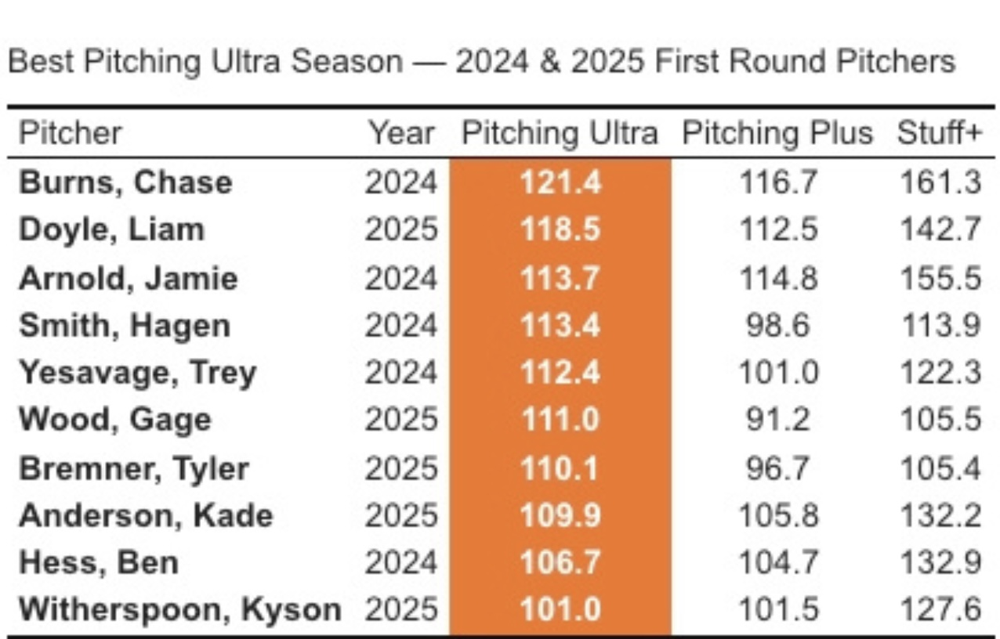
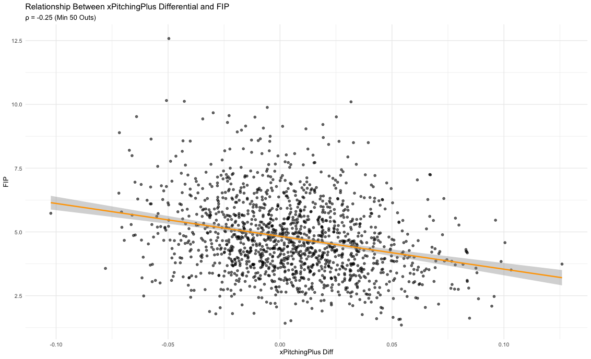
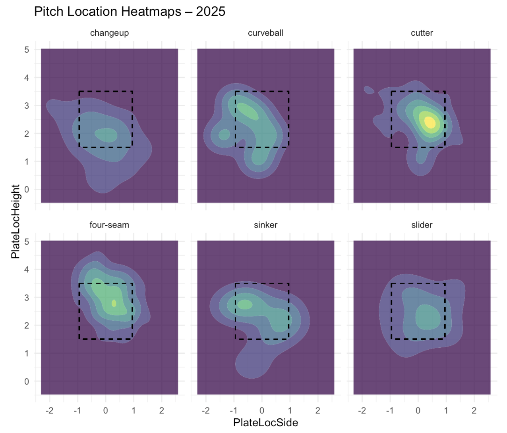
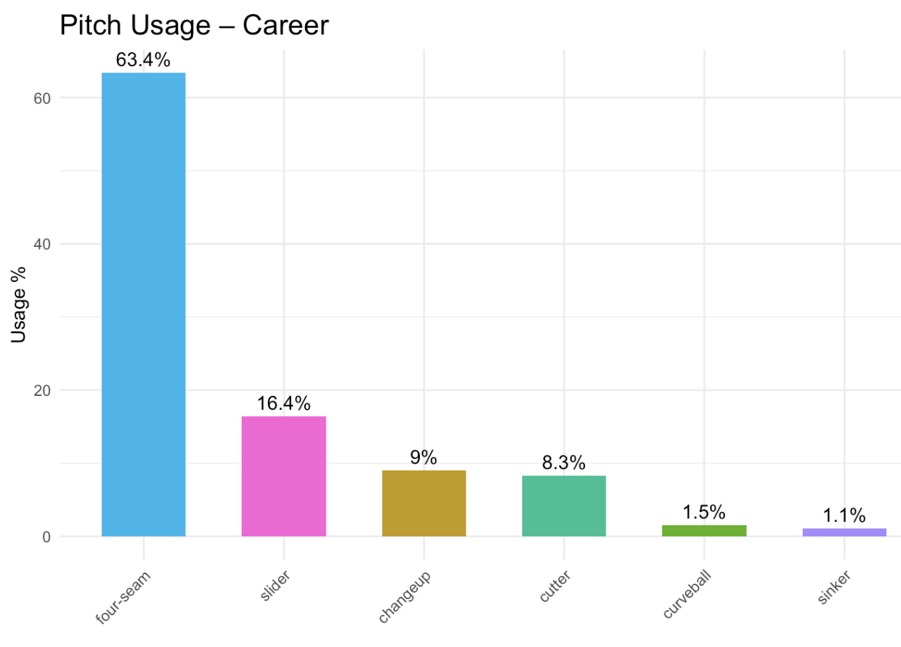
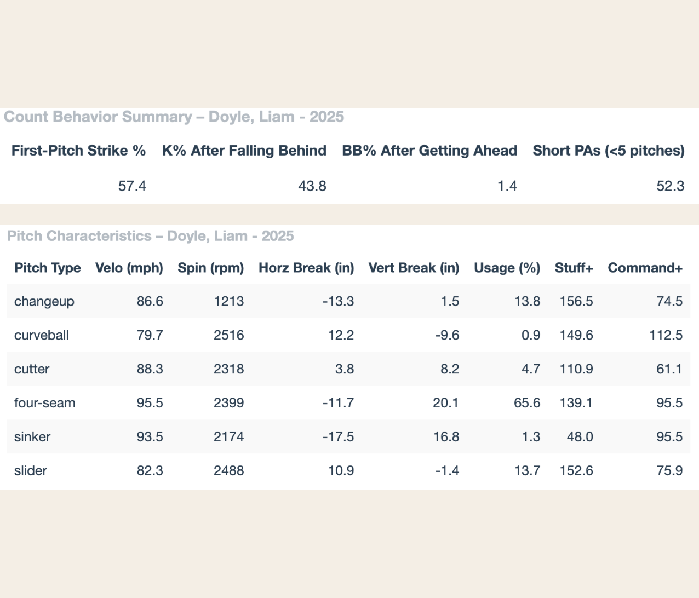

The results showed that pitches clustered around league-average movement generally produced much weaker outcomes, while pitches that deviated significantly from average tended to perform better. Makes intuitive sense, hitters are more accustomed to “average” pitches and thus handle them more effectively, whereas outlier pitches with unusual movement generate stronger results and improved performance.
K’s Baseball
Pitching Ultra
As part of my role as a Baseball Analytics Intern at the University of Miami, I created complete stat lines for each pitcher, covering individual seasons and career totals. Building on this foundation, I developed Pitching Ultra, an advanced player evaluation tool built in R using TrackMan pitch-level data. The project began with cleaning and standardizing the raw data, followed by constructing a comprehensive evaluation model.
Pitching Ultra is a composite “plus” statistic (league average = 100) that integrates multiple performance dimensions: expected results, command ability, actual results, and a proprietary “stuff” grading system that measures pitch effectiveness. I used this model to evaluate both our own pitchers’ performance and potential transfer portal targets.
The model produces both single-season and career metrics, enabling evaluation across different timeframes. For this project, I analyzed data from the 2024 season and the first half of 2025—both separately, to track year-to-year progression or regression, and combined, to evaluate overall performance. Scores above 100 indicate above-average performance, while scores below 100 indicate below-average performance.
In addition to the composite metric, I evaluated pitchers’ performance by pitch count, including how often they fall behind, their first-pitch strike rate, and their ability to recover when behind in the count.
As part of the Pitching Ultra Evaluation Report, I designed custom visualizations to highlight what makes each pitcher unique. These graphics break down key characteristics, show pitch-type strengths, and detail the specific factors contributing to each pitcher’s Pitching Ultra grade, providing a deeper, more intuitive understanding of their profile.

Pitching Plus
The first part of the Pitching Ultra equation is the Actual results, which is calculated with the Pitching Plus metric I created, which encapsules three metrics, Stuff+, Command+ and Contact+.
While the Pitching Plus metric does not calculate stats like FIP and era it does take into account things that have actually happened and are more in the pitchers control like commanding the ball, throwing it in good zones, having good stuff that can generate whiffs and limiting hard contact.
Stuff+
Command+
xPitching Plus
Another key component of my model evaluates each pitch’s actual performance—measured through whiffs and quality of contact—against its expected performance based on similar pitches. This comparison helps identify pitchers who are either overperforming relative to their stuff and location or underperforming despite strong pitch traits, making it an important piece of the Pitching Ultra framework.
To build this, I used k-means clustering to group pitches into “buckets” based on shared characteristics such as pitch type, spin, movement, and location. Once the clusters were created, the model compared the actual outcome of a pitch to the typical outcomes of other pitches within its bucket.
From this process, each pitcher receives two values: Actual BCW (Bad Contact Called Strikes and Whiffs) and Expected BCW (xBCW). The difference between these two values is then standardized into a plus metric, allowing every NCAA pitcher to be compared on the same scale.
As with the other metrics, I ran a correlation test to evaluate how the differential between Actual BCW and Expected BCW (xBCW) relates to a traditional statistic like FIP. The results were strong: the xPitching+ differential and FIP showed a correlation of -0.25. This suggests that the metric can serve as a valuable diagnostic tool. For example, pitchers with negative xStatsDif values and high FIP may be experiencing worse outcomes than expected, meaning poor results could be driven more by luck or variance than by true skill level. Conversely, pitchers with unusually favorable outcomes—those whose FIP is lower than their xStatsDif suggests—may be “lucky” and due for regression. In this way, the xPitching+ differential helps bridge the gap between underlying pitch quality and traditional outcome-based stats, providing a more complete picture of pitcher performance.

Other Elements of the Report
To complement the reports, I implemented a series of visualizations that provide a deeper evaluation of each pitcher. These include heatmaps, pitch usage charts, and detailed breakdowns of individual pitch characteristics. In addition, I created a performance table that highlights situational metrics such as first-pitch strike percentage, strikeout rate after falling behind in the count, and the ability (or inability) to put hitters away after gaining an advantage.
Together, these visuals offer valuable context that goes beyond traditional stats, giving coaches actionable insights to support player evaluation and decision-making.


